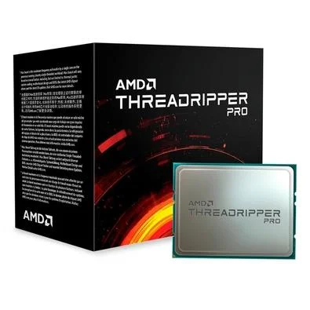

Processador AMD Ryzen Threadripper Pro 5995WX
R$ 24.999,90 R$ 35.499,90 -30%
Ficha Técnica do Produto
- Características: - Marca: AMD - Modelo: Threadripper Pro 5975WX
- Especificações: Familia: - Processadores AMD Ryzen PRO - Linha de Produto: AMD Ryzen Threadripper PRO 5000 Série WX - Tecnologias AMD PRO
- Nº de núcleos de CPU: - 32
- Outras Características: Nº de tópicos: - 64 Máx. Boost Clock: - Até 4,5 GHz Clock Básico: - 3,6 GHz Cache L1: - 2 MB Cache L2: - 16 MB Cache L3: - 128 MB TDP padrão: - 280 W Tecnologia de processador para núcleos de CPU: - TSMC 7nm FinFET Soquete da CPU: - sWRX8 Contagem de soquetes: - 1P Máx. Temperatura de operação (Tjmax): - 95°C Suporte do SO: - Windows 11 - Edição de 64 bits - Windows 10 - Edição de 64 bits * O suporte ao sistema operacional (SO) varia de acordo com o fabricante. Conectividade: - Versão PCI Express: PCIe 4.0 - Tipo de memória do sistema: DDR4 - Canais de Memória: 8 Especificação de Memória do Sistema: - Até 3200MHz Recursos Gráficos: - Sem Gráficos integrados * Placa gráfica discreta necessária Tecnologias Suportadas: - Arquitetura de núcleo AMD "Zen 3" Conteúdo da Embalabem: - Processador AMD Ryzen Threadripper Pro 5975WX Garantia: 1 ano de garantia (3 meses de garantia legal + 9 meses de garantia contratual junto ao fabricante) Peso: 890 gramas (bruto com embalagem)
Descrição
Estreando nos processadores AMD Ryzen Série 5000 para desktop, a arquitetura “Zen 3” é um redesenho básico da lendária família “Zen”...